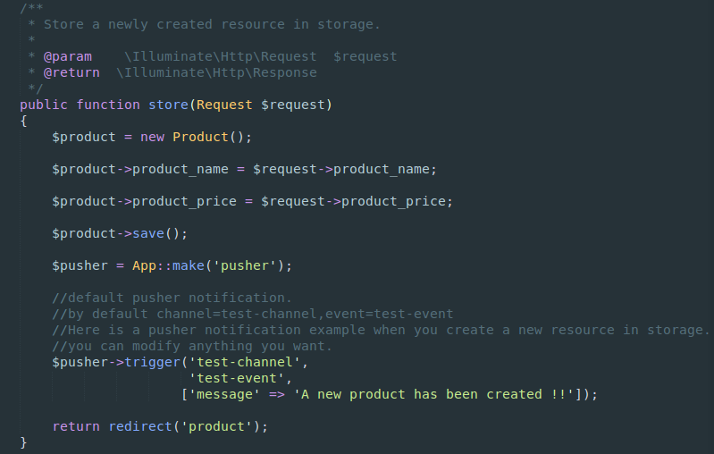

Scaffold-Interface (full documentation page)

Overview
Scaffold Interface is a Laravel package designed to speed up your web development process. Thanks to its powerful CRUD Generator that support all types of tables relationships, and its admin control panel shipped with a built-in User Management System.
Features
-
Generate your models,views,controllers and migrations just in a few clicks.
-
Views scaffolding support Bootstrap and Materialize css.
-
Generate (OneToMany,ManyToMany) relationships including views and controllers.
-
Websockets using Pusher Notifications.
-
AdminLTE dashboard template with users management system (users-roles-permissions) using laravel-permission.
-
Softdeletes and timestamps.
-
A delete confirmation message.
-
Using an interface to design your table.
-
Rollback possibility.
-
Generate CRUD for packages, see Lpackager, CRUD for packages/modules.
Prerequisites
- PHP >=5.6
Laravel supported versions
| Laravel version | Scaffold-Interface version |
|---|---|
| v5.1 | v1.4.11 or less |
| v5.2 | v1.5.* to v1.6.3 |
| v5.3 | ^1.6 |
Note for Laravel v5.3.* :
Make sure that routes path is configured. Go to config/amranidev/config.php, and change routes to 'routes' => base_path('routes/web.php')
I. Package installation
1. Add the package to your dependencies in composer.json:
require : {
"Amranidev/scaffold-interface": "v1.6.*"
}
2. update composer:
$ composer update
3. Add the service providers to config/app.php:
Amranidev\ScaffoldInterface\ScaffoldInterfaceServiceProvider::class,
Amranidev\Ajaxis\AjaxisServiceProvider::class,
Spatie\Permission\PermissionServiceProvider::class,
Vinkla\Pusher\PusherServiceProvider::class,
4. Publish the assets in your application with:
$ php artisan vendor:publish
- What does this package publishes:
- app/Http/Controllers/UserController.php
- app/Http/Controllers/RoleController.php
- app/Http/Controllers/PermissionController.php
- resources/views/scaffold-interface
- public/js/scaffold-interface-js
- public/css/scaffold-interface-css
- config/amranidev/config.php
- database/migrations/migration_file
5. Migrate for the Scaffold Interface table:
$ php artisan migrate
6. Authentication scaffolding:
$ php artisan make:auth
Congratulations, you have successfully installed Scaffold Interface!
II. Usage
- Go to
http://{your-project-url}/scaffold.

- Click on new table and fill the form, then click on ready and done.

MVC files has been generated.

- Migrate your schema to the database by clicking on the Migrate button.

Now your model is ready to use.
- To delete your entity just rollback its table from database clicking on rollback button first, then click on delete button to be deleted form your app.
III. Relationships
1. OneToMany
This package provides a simple short way to generate OneToMany relationship.
We could use our previous example Product entity.
So lets create a new entity called Command.
Before ending creation, click on OneToMany button, choose product table, choose associated field and click on OneToMany Button again to be confirmed.

This will create a model with relation methods ,views, controller and migration file containing foreignkeys, for sure you can change whatever you want.
Then click on migration button.

2. ManyToMany
To generate ManyToMany relationship between tow tables, click on ManyToMany button, choose tables via combobox (table1,table2) then click on create.
Well, this will create a new pivot table schema ready to be migrated adding ManyToMany raltionship methods to models.
This doesn't create views,controllers and routes, because we belive that each web artisan has his own unique methodology.
III. Control Panel AdminLTE
Scaffold-interface provids a simple control panel containing user management system using laravel-permission package to menage users-roles-permissions easily.
- Go a head to terminal and create a new user.
$ php artisan tinker:
$user = new \App\User();
$user->name = "john doe";
$user->email = "jhondoe@example.com";
$user->password = Hash::make("password");
$user->save();
- Add HasRole dependency to app/User.php:
use Illuminate\Foundation\Auth\User as Authenticatable;
use Spatie\Permission\Traits\HasRoles;
class User extends Authenticatable
{
use HasRoles;
// ...
}
- Then click on dashboard button and login.


- You can determine if a user has a certain role:
$user->hasRole('writer');
- You can also determine if a user has any of a given list of roles:
$user->hasAnyRole(Role::all());
- You can determine if a role has a certain permission:
$role->hasPermissionTo('edit articles');
Want more ? check laravel-permission.
NOTE: Dashboard routes are located in
vendor/amranidev/scaffold-interface/src/Http/routes.php, for sure you can change anything you want.
IV. Pusher Notifications

What is pusher ?
Pusher is a hosted service that makes it super-easy to add real-time data and functionality to web and mobile applications.
Pusher sits as a real-time layer between your servers and your clients. Pusher maintains persistent connections to the clients - over WebSocket if possible and falling back to HTTP-based connectivity - so that as soon as your servers have new data that they want to push to the clients they can do, instantly via Pusher.
Pusher offers libraries to integrate into all the main runtimes and frameworks. PHP, Ruby, Python, Java, .NET, Go and Node on the server and JavaScript, Objective-C (iOS) and Java (Android) on the client.
Pusher is a highly scalable real-time solution established in 2010 and has lots of awesome customers including GitHub, MailChimp, CodeShip, The Financial Times, UserVoice, Travis CI and QuizUp.
Before we get started, you have to create a pusher account.
Please sign up for a free Pusher account via pusher.com/signup, and create a new app via Pusher dashboard.
Configuration.
- Go to .env and define (app_id,key,and secret)
PUSHER_APP_ID = your_app_id
PUSHER_KEY = your_key
PUSHER_SECRET = your_secret
- Go to config/pusher.php and define pusher credentials env.
'connections' => [
'main' => [
'auth_key' => env('PUSHER_KEY'),
'secret' => env('PUSHER_SECRET'),
'app_id' => env('PUSHER_APP_ID'),
'options' => [],
'host' => null,
'port' => null,
'timeout' => null,
],
Channels & Events.
By default Scaffold-Interface used test-channel as a channel and test-event as an event
Backend
So when you create a new entity, the package creates back-end pusher notification code automatically behind the scenes.
Check the Entity Controller, we took our previous example, Product entity.

Frontend
The fornt end code was already defined in resources/views/scaffold-interface/layouts/app.blade.php.
Contribution
Any ideas are welcome. Feel free to submit any issues or pull requests.
Follow me
Twitter :

GitHub :